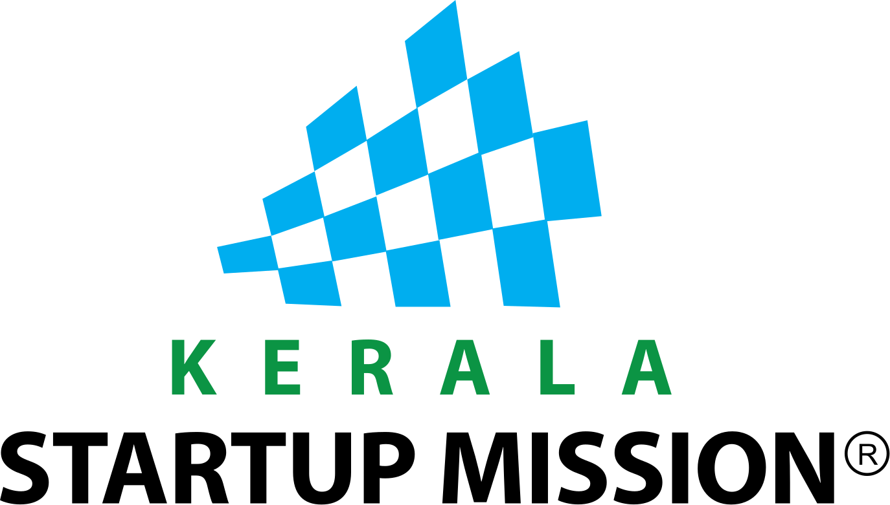

The whole loop runs while the patient is still admitted, so a gap is something you fix rather than something you argue about later.
Whatever the ward produces reaches the file on its own. Nobody on the ward does anything different.
Against what this payer needs for this admission. What is missing is named, and named to a person who can still produce it.
Pre-auth, enhancement, query response and the final claim all leave from the same screen, and the money is matched back to the claim.
Salvia does the reading, the checking and the chasing. A person still decides. Nothing is submitted, worded or answered without someone on your team saying yes.
Every admission and document appears as it happens, not when somebody gets round to uploading it.
What is missing against what this claim needs. Specific, addressed to a person, while there is still time.
Pre-authorisation, enhancement, query response and the final claim all leave from the same screen.
Every admission, every document, every open query and every rupee still with a payer. Your insurance head stops asking people for status and starts reading it.
The team that handles inpatients and the team that handles insurance are doing one job in two places. On Salvia they do one job in one place, and most of the work between them stops existing.
The people who admit the patient and the people who work the claim are looking at the same record at the same time.
Not into a pile that comes back to the desk two days later with the patient already gone.
Hospitals told us this was the appeal. Not a bigger desk, a smaller one that does not lose things.
An HMS integration is a project with a timeline. The desk should not sit idle until it finishes, so it does not. You work from the first admission, and the integration deepens what you see rather than switching it on.
The desk is already working the claim. Evidence arrives, gaps are named, queries go out and the file is submitted. Nothing here is waiting on IT.
The integration does not switch the desk on. It stops your team retyping what the hospital already knows, and it makes the room rent check exact.
Your clinical staff keep working exactly as they do today. That is a design constraint, not a nice to have.
You do not wait for the integration to finish before the desk is useful. It works from the first admission.
Our claim model follows NHCX's own workflow vocabulary, so the transport is a swap rather than a rebuild.
Worth writing down, because every other vendor in this market is careful not to.
We will sit with your insurance desk for a day, take the last week of files you have already closed, and show you what was missing and the exact moment it could still have been produced. No slides.
Everything inside a product frame is Hairline, rendered from the real tokens. Everything outside it is the brand. They never mix, which is what stops the product shots looking like a different company's software.